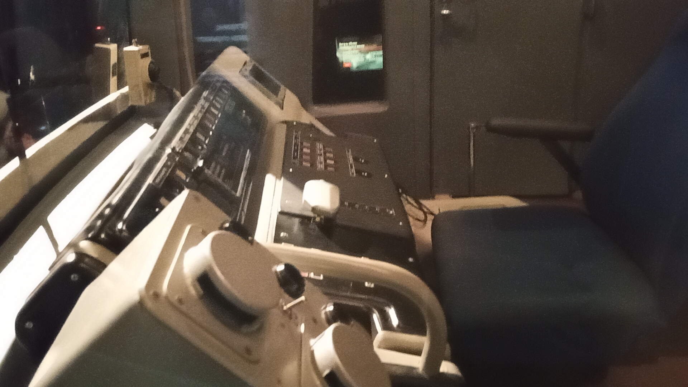
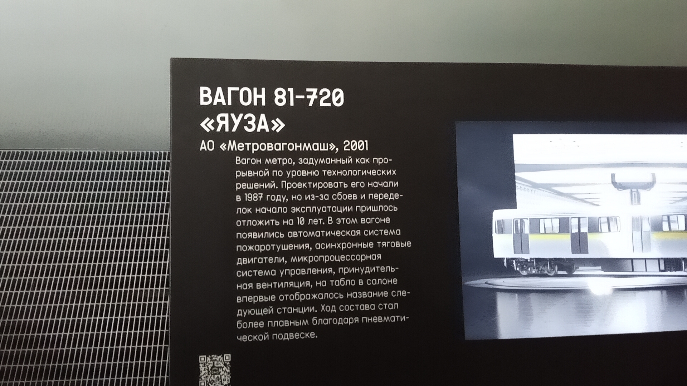

Яуза №0021
Яуза №0021 — один из сохранившихся вагонов экспериментального семейства «Яуза» (81-720). Этот вагон является важной частью истории развития подвижного состава Московского метрополитена.
После восстановления на ВРК «Выхино» (15.04.2021 — октябрь 2023) вагон был доставлен в Музей транспорта Москвы 10.11.2023.
Общая информация
| Параметр | Значение |
|---|---|
| Город | Москва 🇷🇺 |
| Депо/Парк | Музей транспорта Москвы |
| Модель | 81-720 «Яуза» |
| Построен | 2001 |
| Текущее состояние | Не эксплуатируется |
| Назначение | Музейный |
История
- 04.2008 — передан в ТЧ-7 «Замоскворецкое»
- 15.04.2021 — передан в Музей транспорта Москвы
- 15.04.2021 — октябрь 2023 — проходил восстановление на ВРК «Выхино»
- 10.11.2023 — доставлен в Музей транспорта Москвы
История семейства «Яуза»
Первый опытный состав
Построен первый опытный состав Яузы (001-002-003-004-005). Презентация состоялась 18 января 1993 года.
Серийное производство
Начато серийное производство вагонов 81-720/721 «Яуза» с асинхронным тяговым приводом.
Постройка вагона №0021
Вагон 81-720 «Яуза» №0021 построен в 2001 году.
Эксплуатация в ТЧ-15
Вагон эксплуатировался в депо ТЧ-15 «Печатники».
ТЧ-7 «Замоскворецкое»
Вагон передан в ТЧ-7 «Замоскворецкое».
Восстановление
Вагон Яуза №0021 проходил восстановление на ВРК «Выхино».
Доставка в Музей транспорта Москвы
Вагон доставлен в Музей транспорта Москвы для дальнейшего сохранения и экспонирования.
Вагоны Яуза стали первыми отечественными серийными вагонами метро с асинхронным тяговым приводом. Их опыт был использован при создании следующих поколений поездов.
Конструктивные особенности
⚡ Асинхронный привод
Яуза стала первым серийным отечественным поездом с асинхронными тяговыми двигателями, что обеспечило более плавный ход и экономию электроэнергии.
🪟 Конструкция кузова
Уникальная форма кузова, отличавшаяся от предыдущих моделей. Более обтекаемый дизайн.
💺 Интерьер
Современная планировка салона, улучшенная эргономика, информационные табло.
🚪 Двери
Пневматические раздвижные двери, обеспечивающие более быструю посадку и высадку пассажиров.
Технические характеристики
Длина вагона
19 210 мм
Ширина
2 700 мм
Высота
3 695 мм
Мощность
8 × 170 кВт
Макс. скорость
80 км/ч
Вместимость
~330 человек
Фотогалерея

Общий вид музейного вагона.

Салон музейного вагона.

Рабочее место машиниста.

Музейная информация.
Нажмите на фото для увеличения
«Яуза стала важным этапом в развитии Московского метро. Именно на этих вагонах впервые в отечественной практике был применён асинхронный тяговый привод. Сегодня сохранившиеся экземпляры, включая №0021, являются живыми свидетелями технического прогресса».